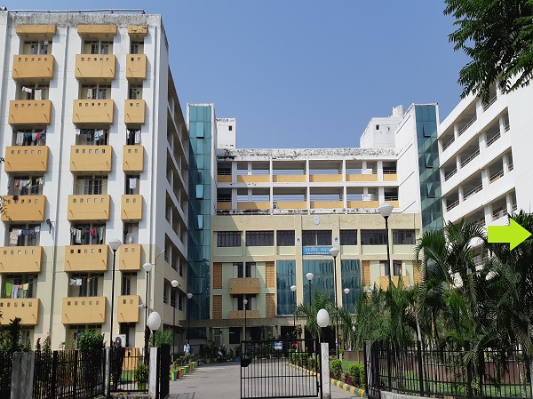

|  |
AboutRajiv Bhawan is the newest jewel among the 19 hostels of IIT Roorkee. It is named on the 6th prime minister of India, Rajiv Gandhi. It was on 27 October, 2008 that the founding stone of the Bhawan was laid by the then director of IITR , Dr. S.C. Saxena. The construction was completed on 12 November 2010.The Bhawan came to be known in its present inhabitable form on 17 July, 2011, when the students first walked in. Rajiv Bhawan boasts of 675 rooms distributed between 6 floors, dining mess , canteen and 8 guest rooms. The bhawan also has a state of art cyber cafe with 20 high end desktop computers, a party room and a common room with HD television , 2 table tennis tables , 2 foosball tables ,2 caroms and 6 chess boards. It also has a washing room with 6 front loading fully automatic washing machines. The bhawan provides ease of accessibility with 6 lifts. Bhawan inmates also enjoy high speed internet through wired LAN. Rajiv Bhawan also boasts of an eco friendly design with solar powered water heater and lighting. Various competitions and activities like chess, table tennis, badminton, foosball competition were also organized in the Bhawan throughout the year. There are many amongst us who have brought glory to the Bhawan by winning various intra and inter IIT competitions throughout the year |